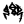

《文史》2013年第一辑
《宋書》校點續議（一）
吳金華
南朝梁沈約所撰《宋書》一百卷，在長期流傳過程中卷帙有所散佚，文字亦多訛誤。為了做好此書的復原工作，以前的學者付出了大量的勞動。中華書局1974年推出的《宋書》校點本就是上述工作的一大總結。從校點者王仲犖先生為中華本所作的《校勘記》及最近影印出版的《宋書校勘記長編》（下文簡稱《長編》）可以看出，校點者以北京圖書館所藏三朝本、北監本、毛本、殿本、局本、百衲本六種版本互校，不僅汲取了錢大昕、成孺、李慈銘、孫虨、張森楷、張元濟等許多專家學者的研究成果，還參校了《南史》、《晉書》、《南齊書》、《建康實錄》、《通典》、《冊府元龜》、《資治通鑑》等許多典籍中的有關部分，正訛補缺，考異揭疑，並重編目錄，多所貢獻。顯而易見，這個校點本體現了二十世紀七十年代《宋書》整理研究的最高水準，是矗立於《宋書》整理研究史上最新的里程碑。今天，我們在新的歷史條件下對校點本加以修訂，最基礎的工作當然是針對不斷發現的新問題展開討論。《宋書·孔琳之傳》載彥琳語云：“豈曰允中？貴獻管穴。”本着這個宗旨，本文續議一百五十餘則，撰寫體例一仍上篇。不揣固陋，敬請讀者指正。
庚申，髙祖鎮石頭城。（卷一《武帝紀上》，第9頁）
議：王鳴盛認為本文的“鎮”應當改作“入”。這種臆測，是忽略了《春秋》史法的結果。
第一，《公羊傳》所謂“常事不書”，是史家的記事原则之一。劉裕率領義軍逼走了盤踞於建康的桓玄之後，“入石頭城”已属情理之中的常事；可是，劉裕占領建康之後並沒有高興得忘乎所以，他不是以“元首”的姿態進住建康的宮殿，而是讓宗室司馬遵在宮殿中主持晉廷的“留臺”（實際上是義軍控制下的新政府），自己則鎮守石頭城以確保建康的安全。戰亂時期的石頭城，是首都建康最重要的軍事堡壘；這個堡壘在誰手裏，誰就有控制建康的實力。因此，劉裕此時親鎮石頭城，實屬非常之人的非常之舉，值得大書特書。
第二，《公羊傳》所謂言“獲”不言“敗”之類，是史家的措辭技巧之一。例如《春秋》記僖公十五年事云：“十有一月壬戌，晉侯及秦伯戰於韓，獲晉侯。”這次秦、晉之戰的結果是晉師敗績，但《春秋》為什麼不交代“晉師敗績”就直接説“獲晉侯”？《公羊傳》的解釋是“君獲，不言敗績也”；這就是説，史文既已説明晉侯被秦師俘獲，晉師的敗績也就不言自明了。《宋書》等等也是這樣，史文既稱劉裕“鎮石頭城”或“屯石頭城”，就意味着此前劉裕已率領義軍攻“入”了石頭城乃至占領了建康。從詞義的角度看，“鎮”和“屯”包含了“入”義，而“入”則不能代替“鎮”和“屯”；這就象晉侯被“獲”的“獲”隱含了晉師敗績之義，而説晉師“敗績”則不能表明晉侯被“獲”的事實一樣。如果依從王鳴盛所謂“鎮”當作“入”的説法，那麼，《宋書》、《南史》在改成了“髙祖入石頭城”之後，還必須加上“遂親鎮石頭城”或“遂自屯石頭城”之類的句子，因為“入”不能表明“鎮”、“屯”這一重要事實。由此可見，《宋書》、《南史》及《資治通鑑》的編撰者不肯浪費紙墨而加上“髙祖入石頭城”之類的廢話，是無可非議的。
髙祖位微於朝，衆無一旅，奮臂草萊之中，倡大義以復皇祚。由是王謐等諸人時失民望，莫不愧而憚焉。（同上，第9頁）
《校勘記》：北監本、殿本作“時衆民望”。三朝本、毛本、局本作“時失民望”。李慈銘《宋書劄記》云：“當作時失人望”。今從三朝本、毛本、局本。（第24頁）
議：百衲本（宋本）作“時衆民望”，北監本、殿本沿襲宋本，雖然難懂，但容易引起研究者的注意；今本從三朝本等作“時失民望”，字面上似乎通順了，有待校勘的問題就變得隱而不顯了。竊謂“衆”與“宗”形音皆近，“衆”字很可能是“宗”的訛文。南北朝稱名高譽美之士為“時宗”，《晉書》卷九二《袁宏傳》載其《三國名臣頌》曰：“夫仁義不可不明，則時宗舉其致；生理不可不全，故達識攝其契。相與弘道，豈不逺哉。”《魏書》卷五三《李沖傳》載孝文帝詔曰：“司空文穆公，徳為時宗，勲簡朕心。”是其例。“時宗”與“民望”連文，已近乎四字格成語，《文苑英華》卷三八五載沈約為齊帝作《授王亮左僕射詔》云：“朝端任重，刑政斯出，自非民望時宗，莫諧茲舉。”《南齊書》卷三八《蕭頴胄傳》云：“江僕射，蕭、劉領軍、徐司空、沈僕射、曹右衛，或外戚懿親，或皇室令徳，或時宗民望，或國之虎臣。”《藝文類聚》卷五三載北齊邢子才為李衛軍疾以國子祭酒讓東平王表曰：“具官臣某，民望時宗，聲實攸在。”均其例。
詔曰：古稱大者天地，其次君臣，所以列貫三辰，神人代序，諒理本於造昧，而運周於萬葉。（同上，第11頁）
議：“大者天地，其次君臣”引自古語，照例宜加引號。此語見《韓詩外傳》卷一“晉靈公之時”章載趙宣子曰：“夫大者天地，其次君臣，所以為順也。”
初，桓玄之敗，以桓冲忠貞，署其孫胤。至是，冰謀以胤為主。（同上，第14頁）
議：張、孫之説可從。中華本之所以未出校，蓋以為作“署”亦通，故“署”字之訛尚須進一步論證。
此時的桓胤祗不過因得“宥”而免死，決沒有受“署”而當官，事見《晉書》卷七四《桓胤傳》：“（桓）玄簒位，為吏部尚書，隨玄西奔；玄死，歸降。詔曰：‘夫善著則祚遠，勳彰故事殊……故太尉沖，昔藩陜西，忠誠王室。諸子染凶，自貽罪戮。念沖遺勤，用悽於懐，其孫胤宜見矜宥，以奬為善，可特全生命，徙於新安。’”不難看出，上引之“詔”當頒於晉安帝元興三年（404）中後期或義熙元年（405）春季，詔曰“徙於新安”，不是指桓胤被任命為新安地區的官員，而是指戴着“桓玄餘黨”這頂破爛帽子被遷徙到新安。
桓胤為劉裕所殺，在義熙三年（407）閏二月。他不是由於在新安官員的位置上出了什麼問題，而是因為“桓玄餘黨”東陽太守殷仲文、永嘉太守駱球聯合反對劉裕時，打算立他為“謀主”。
“署”是委任的意思。如上所述，“署其孫胤”顯然不合事理。《資治通鑑》卷一一四載義熙元年正月事云：“戊戌，大赦改元，惟桓氏不原。以桓沖忠於王室，特宥其孫胤。”其中“特宥”二字，可能是《晉書》“其孫胤宜見矜宥”、“特全生命”二句的濃縮。張、孫並云“署當作宥”，可從《晉書》、《通鑑》中獲得支持。
不能以道處功，恃寵驕溢。（卷二《武帝紀中》，第31頁）
王仲犖《長編》“恃寵驕益”條：“驕益”，三朝、北監、毛本同本本。殿本、局本作“驕溢”，是。逕改不出校。
劉藩死於閶闔之內，諸葛弊於左右之手。（同上，第34頁）
王仲犖《長編》“劉藩死於閭闔之明”条云：閭闔”，局本、《元龜》七二五、《晉書》、《南史》、《通鑑》作“閶闔”，是。逕改不出校。“明”，三朝補、北監、毛本、殿本作“内”。局本、《晉書》、《南史》、《元龜》七二五作“門”。
議：校點本取“內”而未出校記，僅僅在《長編》中説明異文，值得進一步研究。“明”字應是“門”的形訛，《晉書》、《南史》、《元龜》作作“門”，可作為北宋以前舊本既不作“內”也不作“明”的旁證。百衲本雖然誤為“明”，但形體離“門”字不遠，由此足見宋本之可貴。
皇帝臣裕，敢用玄牡，昭告皇天后帝。（卷三《武帝紀下》，第51頁）
其有犯鄉論清議，贓汙滛盗，一皆蕩滌洗除，與之更始。（同上，第52頁）
議：這是傅亮為宋武帝劉裕所撰的即位改元大赦詔。“洗除”之下，唐許敬宗等所編《文館詞林》卷六六八有“先注”二字，蓋原文以“洗除先注”為一句。
《南齊書》卷二《高帝紀下》載王儉為齊高帝蕭道成所撰的即位改元大赦詔云：“有犯鄉論清議贓汙淫盜，一皆蕩滌，洗除先注，與之更始。”《梁書》卷二《武帝紀中》載沈約為梁武帝蕭衍所撰的即位改元大赦詔云：“其犯鄉論清議贓汙淫盜，一皆蕩滌，洗除前注，與之更始。”其中“前注”即“先注”，指先前記錄在案的內容。從沈約、王儉所撰的詔書作“洗除前注”或“洗除先注”來看，出自傅亮之筆的本文，作為沈約等模仿的範本，不應當沒有“先注”二字。
秋七月丁亥，原放刼賊餘口沒在臺府者，諸流徙家並聽還本土。（同上，第54頁）
百衲本作“竝聽還本”，三朝本、汲本、殿本作“竝聽還本土”，張元濟《校勘記》在殿本欄內批云：“衍土字”。
議：張元濟以有“土”者為衍文，惜無論證，故不為校點本所取。竊以為張說可從，茲申證如次。
第一，百衲本無“土”，淵源有自。宋本《冊府元龜》一九一亦然，蓋北宋人所見如是；《南史》也沒有“土”，蓋唐人所見之文如是。
第二，南北朝時，習稱返回故土為“還本”，如本書卷六《孝武帝紀》載孝建二年九月庚戌詔：“在朕受命之前，凡以罪徙放，悉聽還本。”又卷八《明帝紀》載泰始二年十一月事云：“丙申，制使東土經荒流散，並各還本。”《梁書》卷二《武帝紀中》載天監元年詔曰：“大運肇升，嘉慶惟始，刼賊餘口沒在臺府者悉可蠲放；諸流徙之家竝聽還本。”這是梁武帝的開國之詔，其中“諸流徙之家竝聽還本”正是本文的翻版，可見本文原無“土”字。
第三，早期文本作“還本”，後出文本根據後世的語言習慣增一“土”字，這種現象屢見不鮮。例如本書卷九《後廢帝紀》載元徽元年正月壬寅詔曰：“自元年以前貽罪徙放者，悉聽還本。”宋本作“還本”，而後出的北監本、殿本等就變成了“還本土”；又如本文在《冊府元龜》的宋本中作“並聽還本”，但是到了明、清版本中就成了“並聽還本土”。
普更申明。（卷三《武帝紀下》，第55頁）
議：作“宜”的《元龜》是明刻本，不足據；宋本《元龜》作“普”，與《宋書》同。當時以“普更”為詔書常語，又如本書卷六《孝武帝紀》載大明三年八月丙申詔曰“可普更賻給，務令豐厚。”又載五年二月癸巳詔曰：“可普更符下，聴以今為始。”
三年春正月甲辰朔，詔刑罰無輕重，悉皆原降。（同上，第58頁）
議：“刑罰”見於三朝本等後出版本，而百衲本則作“刑罪”；這裏不取百衲本而不出校記，顯然把“刑罪”看成了誤文，實屬可商。
竊謂宋本作“刑罪”，既與《南史》相合，又與古語相合，三朝本以下作“刑罰”者殆非舊文。“刑罪”猶言“刑罰”，《史記》卷一〇《孝文本紀》載緹縈上書曰：“妾願沒入為官婢，贖父刑罪，使得自新。”《漢書》卷一二《平帝紀》載元始五年正月詔曰：“惟宗室子皆太祖高皇帝子孫及兄弟吳頃楚元之後……或陷入刑罪，教訓不至之咎也。”《三國志》卷一二《魏志·司馬芝傳》載其語曰：“夫刑罪之失，失在苛暴。”本書卷二《武帝紀中》載義熙十四年六月宋公令曰：“府州刑罪，亦同蕩然。”均其例證。又本卷上文載永初元年八月立王太子義符為皇太子詔曰：“其見刑罪無輕重，可悉原赦。”其中“刑罪無輕重”之語，與本文如出一口，大概這兩份詔文皆出自傅亮之筆，故措辭均稱“刑罪”。
二十六年……二月己亥，車駕陸道幸丹徒，謁京陵。三月丁巳，詔曰：“朕違北京二十餘載……饗讌故老……其大赦天下。復丹徒縣僑舊今嵗租布之半。行所經縣，蠲田租之半。”（卷五《文帝紀》，第97頁）
《校勘記》：三月丁巳，下有乙丑。各本同。按是月丁卯朔，無丁巳，亦無乙丑。四月丙申朔，二十二日丁巳，三十日乙丑。（第107頁）
百姓勞弊，傜賦尚繁。言念未乂，宜崇約損。（卷六《孝武帝紀》，第112頁）
王仲犖《長編》：“未乂”
議：“未乂”猶言不安、不寧，屢見於魏晉以來的文獻。宋本《元龜》作“木乂”，“木”字顯為“未”之殘文；《長編》所引乃明刻本《元龜》，對本文祗有負面的參校價值。明刻本《元龜》不據《宋書》校正“木”字，竟將“未乂”臆改為“守文”，讓一字之訛發展成兩字皆誤，使原文變得面目全非，憑空給讀者增加了貌似有用而實為贅疣的異文。前賢每謂明人往往不讀古書而妄改古文，信然。
嚮風慕義，化民成俗。（同上，第128頁）
王仲犖《長編》：“鄉風慕義”條：“鄉”《元龜》一九四作“嚮”，是。逕改不出校。
議：“鄉”是“嚮”的古字，不必以今字逕改古文。“鄉”在甲骨文中作“”，是兩人共食時對坐相向之形。先秦兩漢的文獻用“鄉”表示面向某方，即從對坐相向的意思引申而來。例如《左傳·僖公三十三年》：“秦伯素服郊次，鄉師而哭。”又如《漢書》卷八《宣帝紀》“匈奴單於鄉風慕義”，唐顏師古注：“鄉，讀曰嚮。”又卷五七《司馬相如傳》“喁喁然皆鄉風慕義欲為臣妾”，顏師古注：“鄉，讀曰嚮。”又卷六五《東方朔傳》“逺方異俗之人鄉風慕義”，師古注：“鄉，讀曰嚮。”在唐人看來，“鄉”、“嚮”之異，是訓詁學的問題，不是校勘學事情。類似的現象，在《宋書》中不止一見，又如本書卷一《武帝紀上》“且分徹見力”的“徹”不必改作“撤”，卷二二《樂志》的“哥”不必全改“歌”，卷六三《顏延之傳》“所載鹹其素畜”的“畜”不必改為“蓄”，等等。
思宣睿範，引兹簡恤。（卷七《前廢帝紀》，第142頁）
議：詔文之“引”，當為“弘”字之殘，可據宋本《元龜》卷一九一校改。本書卷二《武帝紀中》載義熙十一年宋公劉裕下書云：“毎永懐民瘼，宵分忘寢，誠宜蠲除苛政，弘茲簡惠。”本文的“引茲簡恤”就是“弘茲簡惠”的同義語。
俾夫舊賦既繁，為費彌廣，鑒寐萬務。毎思弘革。（卷八《明帝紀》，第159頁）
議：關於底本的
“監寐”
底本的“監寐”之所以不必改成“鑒寐”，還牽涉到全書的校勘體例。本書卷二《武帝紀中》載義熙十四年六月令曰：“監寐永言，未知攸託。”（第44頁）其中“監寐”既然沒有被逕改為“鑒寐”，那麼本文也不當例外。
“監寐”早在後漢文獻中已經出現，例如漢熹平石經有“□□如府監寐”等殘字，《後漢書》卷五七《劉陶傳》載其諫改大錢疏曰：“屏營傍徨，不能監寐。”舊注以為“監寐”猶言寤寐，今人或謂“監”、“假”相通，竊以為意有未盡，故陳連讀音變之説。
平定天下，逆黨多被全，其有才能者，並見授用，有如舊臣。（同上，第170頁）
議：“逆黨多被全”辭氣不完。“其”字若非“宥”字之訛，則“其”上當奪“宥”字。《通鑑》卷一三三作“義嘉之黨多蒙全宥”，可參校。
且邉虞尚警，徭費彌繁。（卷九《後廢帝紀》，第184頁）
王仲犖《長編》：“傜”，《元龜》一九八作“供”。
西北戎將，裸身求衣。（同上，第185頁）
議：“戎”當作“戍”，可據宋本《元龜》卷四七一校改。把戍守某地的將領稱為“戍將”，是古人常語；“戎將”似是而非，這種説法是否存在，很值得懷疑。
——2012-4-1修订：“戎”宋本《元龜》卷四七一作“戍”，於文為優。把戍守某地的將領稱為“戍將”，是古人常語。
而国度弘费，四倍元嘉。（同上）
議：底本作“引費”，不宜遽據明刻本《元龜》改為“弘費”。
省圗不如視笛之了，故復重作蕤賔伏孔笛。（卷一一《律曆志上》，第215頁）
王仲犖《長編》：“了”，《晉志》作“孔”。
《宋書校議》：“視笛之了”，《晉書·律曆志上》作“視笛之孔”，是也。
議：《宋書》及《晉書》的不同版本，均出現“了”、“孔”之異，作“孔”者均為晚出的版本，竊以為“了”字未必非而“孔”字未必是。
一，百衲本《晉書》亦作“視笛之了”，與《宋書》三朝本相合；殿本《晉書》“了”作“孔”，中華書局1974年出版的《晉書》舍宋本而取殿本，能不能算是“擇善而從”，還有待必要的論證。
二，《宋書》早期版本作“視笛之了”，後出的殿本也變“了”為“孔”，校點本舍殿本而取宋本，大可商榷。“了”，
魏明帝景初元年……至於郊祀、迎氣、祭祠、烝嘗、巡狩、蒐田、分至啓閉，班宣時令，皆以建寅為正。（卷一二《律曆志中》，第232頁）
議：“祭”當從《三國志》卷三《魏志·明帝紀》作“礿”。礿、祠、蒸、嘗，是上古時代天子諸侯四季祭祀宗廟的一套專名。《禮記·王制》曰：“春曰礿，夏曰禘，秋曰嘗，冬曰烝。”鄭玄注：“此蓋夏殷之祭名，
賈誼《取秦》云：“漢土德。”葢以是漢代秦。詳論二説，各有其義。張蒼則以漢水勝周火，廢秦不班五德。賈誼則以漢土勝秦水，以秦為一代。論秦、漢雖殊，而周為火一也。然則相勝之義，於事為長。若同蒼黜秦，則漢水、魏土、晉木、宋金；若同賈誼《取秦》，則漢土、魏木、晉金、宋火也。（同上，第259頁）
議：在句讀和標點符號方面，“賈誼《取秦》云”等八字，應當改成“賈誼取秦，云漢土德”二句；下文“若同賈誼《取秦》”中的書名號也應當取消。理由如下：
第一，“取秦”不是文獻的專名。“取”的意思跟“廢”、“黜”之義相反，所謂“廢秦”、“黜秦”，指張蒼在論述歷代正統王朝更代次序的時候，把秦朝排除在外；所謂“取秦”，則指賈誼的看法跟張蒼不同，他認為秦朝是跟先前的周朝及當時的漢朝一樣，也屬於正統王朝之一。既然“若同蒼黜秦”中的“黜秦”不是專名，那麼，“若同賈誼取秦”的“取秦”當然也不是專名。
第二，賈誼根據五行相克之説，以周為火德，秦為水德，漢為土德；而張蒼的“黜秦”之説則以為漢得水德，直接上承周代。此事史有明文。《史記》卷八四《屈原賈生列傳》云：“賈生以為，漢興至孝文二十餘年天下和洽，而固當改正朔、易服色、法制度、定官名、興禮樂，乃悉草具其事儀法色尚黃，數用五，為官名，悉更秦之法。”所謂“色尚黃，數用五”等等，正是以漢為土德的最明顯的標志。荀悅《前漢紀》卷八更明著此事云：“賈誼謂漢土徳。”既然“謂漢土徳”，也就是承認秦得水德，這就是本文所謂“賈誼取秦，云漢土德”；同理，下文“若同賈誼取秦，則漢土、魏木、晉金、宋火也”的意思顯然是這樣：如果按照賈誼取秦（以秦得水德）的説法，那就是漢得土德、魏得木德、晉得金德、宋得火德。